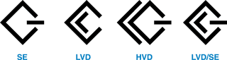

Олег Денисов, Сергей Назаров
За последний год на рынке жестких SCSI-дисков не происходило практически ничего интересного - за исключением, пожалуй, появления небольшого числа моделей с возросшей плотностью записи и массового внедрения интерфейса Ultra320 SCSI. Более того, динамика рынка за последнее время говорит о том, что IDE-накопители, рассчитанные на массовое использование в недорогих ПК, прогрессируют быстрее, чем SCSI-диски, предназначенные для построения высокопроизводительных дисковых массивов и оснащения мощных рабочих станций и серверов. Уже довольно давно IDE-диски опережают SCSI-накопители по плотности записи данных: у большинства тестировавшихся SCSI-дисков она находилась в интервале 10-20 Гбит/дюйм2 (у лидировавшего по этому показателю Seagate ST318438LW - 27,3 Гбит/дюйм2), в то время как практически у всех современных IDE-моделей она составляет около 30 Гбит/дюйм2 и более. Так что IDE-диски со скоростью вращения 7200 об./мин довольно часто превосходят по быстродействию SCSI-диски на 10 000 об./мин. Тем не менее благодаря высокой скорости вращения SCSI-модели на 15 000 об./мин пока остаются самыми быстрыми среди жестких дисков и, судя по всему, пока не собираются сдавать своих позиций.
Прежде чем приступить к обсуждению результатов тестирования, хотелось бы дать краткое описание существующих SCSI-стандартов и интерфейсов, так как обилие разнородной и подчас неточной информации по этому вопросу способно запутать не только новичка, но и специалиста.
Интерфейс SCSI - первые шаги
Интерфейс SCSI (Small Computer System Interface - интерфейс малых компьютерных систем) - это универсальный интерфейс для подключения устройств любого назначения. В отличие от интерфейса ATA/IDE, в стандарте SCSI отсутствует ориентация на конкретные типы устройств - он лишь определяет протокол обмена командами и данными между равноправными устройствами. Фактически SCSI - это упрощенный вариант системной шины компьютера. Такая организация требует от устройств определенного интеллекта - например, в жестких SCSI-дисках все функции кодирования/декодирования, поиска сектора, коррекции ошибок и т. п. возлагаются на встроенную электронику, а внешний SCSI-контроллер выполняет функции обмена данными между устройством и компьютером - часто в автономном режиме, без участия процессора (в режиме DMA или Bus Mastering).
Родоначальником SCSI-интерфейса была компания Shugart, выпускавшая жесткие диски. В 1979 г. Shugart разработала для них новый интерфейс с набором команд длиной по 6 байт, в котором использовалась логическая, а не физическая схема адресации устройств на шине. Он получил название SASI (Shugart Associates Systems Interface), и компания выпустила несколько моделей дисков с этим интерфейсом.
В 1980 г. Shugart предприняла попытку стандартизировать SASI в ANSI, но потерпела неудачу. В 1981 г. уже две компании - Shugart и присоединившаяся к ней NCR - направили в ANSI запрос с просьбой о создании рабочей группы по стандартизации и развитию спецификации SASI. На этот раз их усилия не пропали даром, и в 1982 г. в ANSI была создана рабочая группа X3T9.2 по стандартизации и разработке интерфейса, переименованного к тому времени в SCSI, а в 1983 г. были выпущены первые SCSI-диски.
Стандарт SCSI-1
В 1986 г. спецификация на первую версию интерфейса, SCSI-1, была утверждена ANSI в качестве стандарта за номером ANSI X3.131-1986. В стандарте SCSI-1, который еще называют просто SCSI, предусмотрено подсоединение к шине до восьми устройств, включая SCSI-контроллер. Разрядность шины SCSI-1 равна 8 битам, данные могут передаваться в синхронном или асинхронном режиме. Для обнаружения ошибок во время передачи данных по шине может использоваться контроль четности. Рабочая тактовая частота шины SCSI-1 - 5 МГц. Максимальная скорость передачи по шине SCSI-1 составляет 1,5 Мбайт/с в асинхронном режиме и 5 Мбайт/с - в синхронном.
Если быть точными, то скорость передачи данных по SCSI-шине измеряется не в мегагерцах, а в мегатрансферах в секунду (megatransfers per second), т. е. в миллионах транзакций передачи данных по шине в секунду. Таким образом, максимальная скорость передачи данных в синхронном режиме составляет пять мегатрансферов в секунду.
Здесь нужно сделать небольшое отступление о способах синхронной и асинхронной передачи данных по шине. Основное отличие асинхронного режима (Asynchronous Data Transfer) от синхронного (Synchronous Transfer) в том, что в асинхронном режиме передача данных осуществляется только после того, как принимающее устройство подтвердит прием посланных данных, дав тем самым разрешение на передачу следующих. Такой способ еще иногда называют передачей по методу "спросил/ответил", или "запрос/подтверждение". При этом скорость передачи будет тем ниже, чем длиннее кабель, так как пока сигнал подтверждения приема не придет к передатчику, новые данные не будут отправлены, а задержка распространения сигнала для типичного SCSI-кабеля составляет 5,25 нс/м. Скорость передачи данных в асинхронном режиме, как правило, не превышает 2 Мбайт/с.
В синхронном режиме (передача по методу "несколько запросов/несколько подтверждений") обмен данными между контроллером и периферийным устройством идет с заранее согласованной скоростью. Очевидно, что оба они должны поддерживать выбранную скорость. Скорость обмена при синхронной передаче зависит только от характеристик устройств на шине и физических характеристик интерфейсного кабеля. По традиции, если говорят о скорости передачи данных по шине, то по умолчанию подразумевается максимально возможная скорость передачи в синхронном режиме.
В стандарте SCSI-1 предусматривается два варианта электрической реализации SCSI-шины - Single-Ended и Differential (дифференциальный). Интерфейс Single-Ended состоит из 25 линий. Из них 18 - сигнальные (по одной линии на каждый сигнал; -DB(0), -DB(1),..., -DB(7) - восемь линий передачи собственно данных; -DB(P) - линия контроля четности; -ATN, -BSY, -ACK, -RST, -MSG, -SEL, -C/D, -REQ, -I/O - линии для управляющих сигналов), шесть - линии заземления (GROUND) и одна - линия питания для терминаторов (TERMPWR) с постоянным напряжением +5 В по отношению к GROUND. Сигнальное напряжение на всех 18 линиях измеряется относительно "земли" (GROUND), которая остается общей для всех них.
Интерфейс Differential состоит уже из 50 линий. Из них 36 - сигнальные (по две линии на каждый сигнал; +DB(0), -DB(0),..., +DB(7), -DB(7), +DB(P), -DB(P), +ATN, -ATN,..., +I/O, -I/O; назначение и число этих сигналов такое же, как и в варианте Single-Ended), одна - SHIELD GROUND ("земля" для экранирующей оплетки), 10 - GROUND, две - TERMPWR, одна - DIFFSENS (линия для автоматического отключения Differential-устройств при неправильном включении). Как видно, в Differential-варианте интерфейса под каждый сигнал отводится две линии и напряжение сигнала измеряется как разность напряжений между ними.
Вариант Differential сложнее и дороже в изготовлении, чем Single-Ended, однако обеспечивает лучшую защиту при передаче сигналов, так как исчезают помехи, возникающие из-за паразитных токов в общем проводе заземления. Согласно спецификации SCSI-1, общая длина Differential-шины может достигать 25 м, в то время как в варианте Single-Ended - только 6 м. Впрочем, некоторые компании, занимающиеся производством узкоспециализированного оборудования, добиваются увеличения максимальной длины SCSI-шины за счет применения очень качественных кабелей и, возможно, нестандартных SCSI-устройств, изготовленных с некоторыми отступлениями от требований стандарта. Длину шины можно также увеличить при помощи специальной усилительной техники. Например, оборудование, выпускаемое фирмой Paralan (http://www.paralan.com), позволяет увеличить длину SCSI-шины до 4000 м.
Электрически интерфейсы Single-Ended и Differential несовместимы друг с другом, т. е. к SCSI-шине нельзя подключать одновременно устройства обоих типов. Как раз для этого случая предназначена линия DIFFSENS, обеспечивающая защиту дифференциальных устройств. Так, разводка SCSI-разъемов устроена таким образом, что если SCSI-шина будет неправильно терминирована или к ней будут подключены устройства Single-Ended, то линия DIFFSENS будет замкнута на "землю", и устройства с интерфейсом Differential, не обнаружив на этой линии нужного сигнала, просто не включатся. Однако с помощью специальных переходников (выпускаемых, например, той же Paralan) к одному SCSI-адаптеру все же можно подключить одновременно Single-Ended и Differential-устройства.
Согласно требованиям стандарта SCSI-1, оба конца SCSI-шины должны быть терминированы - т. е. к ним должны быть подключены терминаторы, или заглушки. Связано это с тем, что при высоких тактовых частотах возникает переотражение сигналов на концах шины, и если не принять специальных мер, реальная скорость обмена информацией значительно снижается. Поэтому оба конца каждой линии SCSI-шины должны быть нагружены активным сопротивлением, равным по величине волновому сопротивлению линии. В простейшем случае для этого на обоих концах линии включают нагрузочные сопротивления - это так называемое пассивное согласование, которое предусмотрено в спецификации SCSI-1.
Электрические схемы терминирования сигнальных линий в Single-Ended и Differential-интерфейсах, естественно, несколько отличаются. В варианте Single-Ended между каждой сигнальной линией (всего их 18) и линиями заземления и TERMPWR включаются сопротивления - соответственно 330 и 220 Ом. В интерфейсе Differential терминируются сразу два проводника, образующие одну сигнальную линию: между -SIGNAL и TERMPWR включается сопротивление 330 Ом, между -SIGNAL и +SIGNAL - 150 Ом, между +SIGNAL и GROUND - 330 Ом.
Еще раз подчеркнем, что к любой SCSI-шине для ее корректной работы должно быть подключено именно два терминатора на ее концах. При этом нужно учитывать, что некоторые SCSI-устройства (адаптеры, жесткие диски, дисководы CD-ROM) имеют встроенные терминаторы, которые можно включить или отключить. В принципе можно включить встроенные терминаторы на оконечных SCSI-устройствах, однако использование отдельных внешних терминаторов, как правило, повышает качество терминирования шины и уменьшает вероятность возникновения ошибок при передаче данных.
По стандарту SCSI-1 для изготовления SCSI-шины можно использовать кабель двух типов: плоский 50-жильный (50-conductor flat cable; используется, например, для соединения SCSI-устройств внутри корпуса компьютера) или кабель с 25 витыми парами (25-signal twisted-pair cable; применяется, как правило, для подключения внешних устройств). Кабели обоих типов можно использовать как для Single-Ended, так и для Differential-шины. Что касается разъемов, то в стандарте SCSI-1 утвержден один тип разъемов для внутреннего соединения, а также рекомендовано к использованию два типа разъемов для подключения внешних устройств.
Для внутреннего соединения было утверждено два парных неэкранированных 50-контактных разъема - Nonshielded SCSI Device Connector и Nonshielded Cable Connector (для закрепления соответственно на устройстве и на кабеле). Эти разъемы имеют два ряда контактов - по 25 в каждом ряду. Расстояние между рядами, равно как и между соседними в ряду контактами, составляет 2,54 мм (0,100"). Как правило, эти разъемы используются в сочетании с плоским 50-жильным кабелем.
Для внешнего подключения в стандарте SCSI-1 рекомендованы (но эти рекомендации не обязательны) две пары экранированных 50-контактных разъемов - пара Shielded Connector Alternative 1 и Shielded Connector Alternative 2. В каждой паре - по одному разъему для закрепления на SCSI-устройстве (Device Connector) и на SCSI-кабеле (Cable Connector). В разъеме Shielded Connector Alternative 1 было два ряда контактов (по 25 в каждом) с одинаковым расстоянием между рядами контактов и между соседними контактами в ряду - 2,54 мм (0,100"). Однако этот разъем практически нигде не использовался.
Разъем второго типа - Shielded Connector Alternative 2, напротив, получил очень широкое распространение и используется до сих пор. Внешне он очень напоминает 36-контактный разъем типа Centronic, используемый для подключения принтеров по параллельному интерфейсу, почему его так и называют: "50-контактный SCSI-разъем типа Centronic". Используется для подключения внешних SCSI-устройств в сочетании с кабелем с 25 витыми парами. Разъем имеет два ряда плоских контактов по 25 в каждом. Расстояние между соседними в ряду контактами составляет 2,16 мм (0,085"), а между рядами - около 4 мм.
Забегая вперед, отметим, что в стандарте SCSI-2 название разъемов Nonshielded было изменено на 50-Contact Non-Shielded Low-Density - A Cable, а Shielded Connector Alternative 2 - на 50-Contact Shielded Low-Density - A Cable. Low-Density в названиях добавилось из-за того, что в стандарте SCSI-2 появились спецификации на новые разъемы High-Density, у которых расстояние между соседними в ряду контактами составляет уже 1,27 мм (0,050"). Так что под плотностью понимается плотность размещения контактов в ряду. Добавление же A-Cable связано с тем, что в SCSI-2 появилась новая спецификация на 68-жильный кабель, названный B-Cable, а 50-жильный кабель стали обозначать A-Cable.
Наряду с разъемами, спецификации которых включены в стандарт, для подключения низкоскоростных устройств с интерфейсом SCSI-1 используются нестандартные разъемы. В некоторых старых моделях компьютеров - например, производства Sun и Digital - устанавливались 50-контактные разъемы с тремя рядами контактов, а в компьютерах Apple используется 25-контактный разъем DB25 с двумя рядами контактов. Впрочем, он стал довольно популярным и применяется в настоящее время для подключения внешних низкоскоростных SCSI-устройств (например, сканеров).
Стандарт SCSI-2
В том же 1986 г., когда был утвержден стандарт SCSI-1, началась и разработка следующего стандарта - SCSI-2. Интересно отметить, что к разработке SCSI-2 приступили раньше, чем был утвержден SCSI-1. В 1988 г. были выпущены первые устройства с интерфейсом SCSI-2, а в 1994 г. - только через 8 лет с начала разработки - спецификация SCSI-2 была утверждена ANSI в качестве официального стандарта за номером X3.131-1994.
Возможности интерфейса SCSI-2 заметно расширились: увеличилась разрядность шины, возросла пропускная способность, был предложен альтернативный способ терминирования шины, появились новые разъемы с высокой плотностью расположения контактов, был дополнен набор команд и улучшен собственно механизм работы шины - как на логическом, так и на физическом уровне.
Помимо 8-битной в стандарте SCSI-2 специфицированы 16- и 32-битные шины данных. Последняя, правда, никогда не использовалась - по крайней мере при серийном производстве SCSI-устройств. Чтобы различать ширину шины, стали употреблять обозначения Narrow (шина данных в SCSI-интерфейсе имеет ширину в 8 бит) и Wide (16 бит). Если же в названии интерфейса не указывается Narrow или Wide, то по умолчанию считается, что речь идет о 8-битной шине.
Что касается тактовой частоты, то к режиму с частотой 5 МГц, поддерживаемому в стандарте SCSI-1, добавился режим Fast - с тактовой частотой 10 МГц (10 мегатрансферов в секунду). Так что теоретически максимальная пропускная способность интерфейса SCSI-2 - по 32-битной шине в режиме Fast - составляет 40 Мбайт/с. На практике же максимальная скорость передачи данных в синхронном режиме по шине SCSI-2 зависит от комбинации тактовой частоты и ширины шины: Narrow SCSI-2 - 5 Мбайт/с, Wide SCSI-2 (с двумя кабелями - A и B) - 10 Мбайт/с, Narrow Fast SCSI-2 (называется также Fast SCSI) - 10 Мбайт/с, Wide Fast SCSI-2 (тоже с двумя кабелями - A и B) - 20 Мбайт/с.
Отметим еще, что независимо от ширины шины в стандарте SCSI-2 обеспечивается поддержка только восьми SCSI-устройств на шине.
В SCSI-2 предложен способ активного терминирования шины Single-Ended, альтернативный пассивному. Дело в том, что величина терминирующего напряжения (напряжения на сигнальной линии) при пассивном согласовании получается как результат деления напряжения линии TERMPWR на паре резисторов. В свою очередь, величина напряжения линии TERMPWR изменяется во время работы шины, что приводит к возникновению отраженного сигнала и появлению ошибок передачи данных (это становится существенным при больших тактовых частотах). При активном терминировании вместо резистивных делителей напряжения используются регуляторы напряжения (один или несколько), на выходах которых поддерживается постоянное терминирующее напряжение, что позволяет улучшить качество передачи данных по шине. Отметим, что активное терминирование применяется только для интерфейса Single-Ended, в то время как для Differential используется всегда пассивное - по схеме, описанной в SCSI-1.
Хотя, согласно спецификации SCSI-2, использование активного терминирования необязательно при частотах шины до 10 МГц, такой способ все же предпочтительнее. В последующих версиях стандарта пассивное терминирование SE-шины было запрещено для режимов с тактовой частотой 20 МГц, а режимы с еще более высокими частотами для SE-интерфейса вообще не поддерживаются.
Разновидность метода активного терминирования - согласование с принудительным ограничением сигнала (Forced Perfect Termination, FPT-терминирование). В FPT-терминаторе устанавливаются фиксирующие диоды, которые ограничивают максимальные и минимальные напряжения входных сигналов на определенных уровнях. И хотя этот способ не утвержден ANSI в качестве стандарта, производители SCSI-оборудования его используют.
В стандарте SCSI-2 определено два типа кабеля: 50-контактный A-кабель и 68-контактный B-кабель. A-кабель - это тот же кабель, что и в SCSI-1, он изготавливается из плоского 50-жильного провода или провода с 25 витыми парами. B-кабель изготавливается из 68-жильного плоского провода или провода с 34 витыми парами. Плоские провода используются для внутреннего соединения, а на витых парах - для внешнего.
Интересно назначение этих кабелей. По логике стандарта SCSI-2 A-кабель должен использоваться только для организации 8-битной шины, т. е. как и в SCSI-1, сигналы -DB(0)... -DB(7) в случае интерфейса Single-Ended или -+DB(0)... -+DB(7) в случае Differential должны передаваться по A-кабелю. А вот если нужно сделать 16- или 32-битную шину, то будьте добры использовать одновременно два кабеля - и A, и B, при этом биты 0-7 будут передаваться по A-кабелю, а биты 8-15 (16-битная шина) или 8-31 (32-битная шина) - по B-кабелю (соответственно сигналы -DB(8)... -DB(15) для Single-Ended и -+DB(8)... -+DB(15) для Differential или -DB(8)... -DB(31) для Single-Ended и -+DB(8)... -+DB(31) для Differential). Такое решение иначе как нелепым не назовешь. Правда, в одном из примечаний к SCSI-2 говорится, что через некоторое время будет разработана спецификация единого кабеля для 16- и 32-битной шины. На практике так оно и оказалось. Сейчас про B-кабель никто и не вспоминает: 16-битная шина организуется на одном кабеле, а 32-битная до сих пор нигде не используется.
В связи с этим возникает путаница в названиях SCSI-интерфейсов. Когда говорят о Wide SCSI, имеется в виду режим Wide Fast-5 с передачей данных по 16-битной шине на одном кабеле (P-кабеле), определенный в стандарте SPI-2 (и выше). Если же говорится о Wide SCSI-2, то имеется в виду передача данных по 16-битной шине на двух кабелях: A- и B- (впрочем, словосочетание Wide SCSI-2 уже не употребляется по причине анахроничности двухкабельного интерфейса).
В спецификации SCSI-2 было стандартизировано три типа неэкранированных разъемов для внутреннего и три типа экранированных разъемов для внешнего соединения устройств.
Из неэкранированных разъемов два предназначены для использования с A-кабелем (для 8-битной SCSI-шины). Первый из них - 50-контактный неэкранированный разъем высокой плотности. По стандарту имеет двоякое название: 50-Contact Non-Shielded High-Density Connector - A Сable, или Non-Shielded Connector Alternative 1 - A Cable. Имеет два ряда контактов - по 25 в ряду; расстояние между рядами равно 2,54 мм (0,100"), между контактами в ряду - 1,27 мм (0,050").
Второй - 50-контактный неэкранированный разъем низкой плотности. По стандарту имеет также двоякое название: 50-Contact Non-Shielded Low-Density Connector - A Сable, или Non-Shielded Connector Alternative 2 - A Cable. Полностью аналогичен разъему Nonshielded Connector из стандарта SCSI-1. Имеет два ряда контактов - по 25 в ряду; расстояние между рядами, равно как и между контактами в ряду, составляет 2,54 мм (0,100").
Еще один тип неэкранированных разъемов применяется с B-кабелем (второй кабель для 16- или 32-битной SCSI-шины, сейчас разъемы этого типа используются для единого 16-битного кабеля): это 68-контактный неэкранированный разъем высокой плотности. По стандарту носит название 68-Contact Non-Shielded High-Density Connector - B Сable. Имеет два ряда контактов - по 34 в ряду; расстояние между рядами равно 2,54 мм (0,100"), между контактами в ряду - 1,27 мм (0,050").
Экранированные разъемы для использования с A-кабелем (для 8-битной SCSI-шины) бывают также двух типов. Первый - 50-контактный экранированный разъем высокой плотности. По стандарту имеет название 50-Contact Shielded High-Density Connector - A Сable, или Shielded Connector Alternative 1 - A Cable. Два ряда контактов - по 25 в ряду; расстояние между рядами равно 2,54 мм (0,100"), между контактами в ряду - 1,27 мм (0,050").
Второй - 50-контактный экранированный разъем низкой плотности (типа Centronic). По стандарту называется 50-Contact Shielded Low-Density Connector - A Сable, или Shielded Connector Alternative 2 - A Cable. Полностью аналогичен разъему Shielded Connector Alternative 2 из стандарта SCSI-1. Имеет два ряда контактов - по 25 в ряду; расстояние между рядами - примерно 4 мм, между контактами в ряду - 2,16 мм (0,085").
Тип экранированных разъемов для использования с B-кабелем (второй кабель для 16- или 32-битной SCSI-шины, сейчас такие разъемы используются для единого 16-битного кабеля) - это 68-контактный экранированный разъем высокой плотности. По стандарту носит название 68-Contact Shielded High-Density Connector - B Сable. Имеет два ряда контактов - по 34 в ряду; расстояние между рядами равно 2,54 мм (0,100"), между контактами в ряду - 1,27 мм (0,050").
Семейство стандартов SCSI-3
Со спецификацией SCSI-3 повторилась та же история, что и со SCSI-2: ее разработка началась в 1993 г., т. е. раньше, чем была утверждена предыдущая спецификация.
В отличие от SCSI-1 и SCSI-2, SCSI-3 - это уже целое семейство стандартов. Цельная спецификация SCSI была разделена на множество самостоятельных частей, которые разрабатываются и объявляются стандартами независимо друг от друга. Сделано это было вот по какой причине. Спецификация SCSI стала настолько сложной, что ее утверждение в качестве единого стандарта стало замедляться из-за задержек в разработке отдельных частей. Более того, возникли проблемы с оперативным координированием совместных усилий всех участников разросшегося SCSI-проекта - здесь уместно напомнить, что с момента начала разработки до утверждения спецификации SCSI-2 прошло 8 лет.
Все стандарты SCSI-3 объединены в шесть групп: Architecture Model, Common Access Method, Device-Type Specific Command Sets, Shared Command Set, Transport Protocols, Physical Interconnects.
Из всего этого многообразия наибольший интерес представляют стандарты группы Physical Interconnects, в которых определены спецификации на физические интерфейсы (среды), где может происходить передача SCSI-команд. В терминологии SCSI-3 физическому интерфейсу, определенному в SCSI-1 и SCSI-2, было присвоено название SCSI Parallel Interface (параллельный SCSI-интерфейс), а его новые модификации описаны в спецификациях SCSI-3 Fast-20 Parallel Interface (ANSI X3.277-1996), SCSI Parallel Interface - 2 (SPI-2, T10/1142-D), SCSI Parallel Interface - 3 (SPI-3, T10/1302-D) и SCSI Parallel Interface-4 (SPI-4, T10/1365-D). К ставшему уже привычным параллельному интерфейсу добавилось три новых последовательных: Fibre Channel - спецификации Fibre Channel Arbitrated Loop (FC-AL, ANSI X3.272-1996) и Fibre Channel Physical and Signalling Interface (FC-PH, ANSI X3.230-1994); IEEE-1394 (он же Apple FireWire) - High Performance Serial Bus (IEEE 1394-1995); SSA - Serial Storage Architecture Physical Layer 1 (SSA-PH, ANSI X3.293-1996) и Serial Storage Architecture Physical Layer 2 (SSA-PH-2, ANSI NCITS.307-199x).
Последовательные интерфейсы обеспечивают высокую пропускную способность шины (Fibre Channel - до 200 Мбайт/с, SSA - до 160 Мбайт/с), но на настоящий момент достаточно дороги и если где-то и используются, то только в высокопроизводительных серверах и скоростных устройствах хранения данных. Поэтому детально рассматривать их здесь мы не будем, а сосредоточим внимание на параллельном SCSI-интерфейсе, с которым чаще всего приходится иметь дело при подключении SCSI-устройств к ПК.
Стандарт SCSI-3 Fast-20 Parallel Interface
Спецификация SCSI-3 Fast-20 Parallel Interface была утверждена ANSI в 1996 г. В ней был определен новый режим работы SCSI-шины со скоростью передачи 20 мегатрансферов в секунду - Fast-20 (маркетинговое название - Ultra SCSI). По спецификации режим Fast-20 определен только для 8-битной шины, что дает пропускную способность в 20 Мбайт/с, а максимальная длина шины составляет: для интерфейса Single-Ended - 1,5 м при подключении от пяти до восьми устройств и 3 м при подключении от двух до четырех устройств; для интерфейса Differential - 25 м при подключении любого количества устройств (от двух до восьми).
В спецификации SCSI-3 Fast-20 Parallel Interface также разрешено только активное терминирование SE-шины (пассивное терминирование запрещается). Это не касается Differential-шины, где всегда используется пассивное терминирование. Что же касается более скоростных режимов, появившихся позднее, то здесь опасаться нечего - режимы Fast-40 и выше для SE-интерфейса не поддерживаются.
Спецификация SPI-2
SPI-2 до сих пор не утверждена в качестве стандарта, несмотря на то, что уже появилась ее новая версия - SPI-3.
В SPI-2 появился новый тип дифференциального интерфейса - Low Voltage Differential (LVD). В противоположность ему обычный Differential-интерфейс назван High Voltage Differential (HVD). Разница между ними в том, что в LVD-интерфейсе уровни напряжения на шине ниже.
Интерфейс LVD электрически несовместим с SE и HVD. В первую очередь это касается HVD: попытка подключить к одной шине LVD- и HVD-устройства может привести к выходу первых из строя!
Взаимоотношения интерфейсов LVD и SE, можно сказать, не такие "жесткие". В стандарте SPI-2 даже предусмотрены устройства со смешанным интерфейсом - LVD/SE. Что это такое и как работает? Устройства - в том числе и терминаторы - этого типа могут работать либо в режиме LVD, либо в режиме SE, а переключение между ними происходит автоматически: для этого используется сигнал на проводнике DIFFSENS. Таким образом, возможны несколько ситуаций. Если к шине подключены устройства SE и LVD с двумя SE- или LVD/SE-терминаторами, то SE-устройства будут работать, а LVD - автоматически отключатся. Если к шине подключены устройства SE и LVD с двумя LVD-терминаторами, то ничего работать не будет. Если подключены SE- и LVD/SE-устройства с двумя SE- или LVD/SE-терминаторами, то все устройства будут работать в режиме SE. Если подключены SE- и LVD/SE-устройства с двумя LVD-терминаторами, то опять же ничего не будет работать. Если подключены SE-, LVD- и LVD/SE-устройства с двумя SE- или LVD/SE-терминаторами, то LVD-устройства не работают, а SE- и LVD/SE- работают в режиме SE. Если подключены SE-, LVD- и LVD/SE-устройства с двумя LVD-терминаторами - ничего не работает. Если подключены LVD- и LVD/SE-устройства с двумя SE-терминаторами, то LVD-устройства не работают, а LVD/SE- работают в режиме SE. Если подключены LVD- и LVD/SE-устройства с двумя LVD- или LVD/SE-терминаторами, то все устройства работают в режиме LVD.
Экспериментируя с подключением SE-, LVD- и LVD/SE-устройств к одной шине, нужно также помнить, что LVD- и SE-интерфейсы имеют разные ограничения на длину шины в зависимости от скорости передачи данных (Fast-5... 40) и количества подключаемых устройств.
Чтобы легче определять, какой электрический интерфейс имеет SCSI-устройство, в стандарте SPI-2 предложены маркировочные знаки для обозначения устройств с интерфейсом SE, LVD, LVD/SE и HVD (рис. 1).
|  |
| Рис. 1. Маркировка устройств с электрическим интерфейсом Single-Ended, Low Voltage Differential, High Voltage Differential и интерфейсом смешанного типа Low Voltage Differential/Single-Ended.
|
В SPI-2 появился новый скоростной режим - Fast-40 - и наконец-то наведен порядок в названиях SCSI-режимов в зависимости от скорости передачи данных: asynchronous - асинхронный, Fast-5 - синхронный со скоростью передачи 5 мегатрансферов в секунду (в рамках SPI-2 это однозначно соответствует тактовой частоте шины в 5 МГц, для SPI-3 это будет уже неверно), Fast-10 - 10 мегатрансфер/с (10 МГц), Fast-20 - 20 мегатрансфер/с (20 МГц), Fast-40 - 40 мегатрансфер/с (40 МГц). Режимы asynchronous, Fast-5, Fast-10 и Fast-20 поддерживаются для всех трех типов электрического интерфейса - SE, HVD и LVD, а Fast-40 - только для дифференциальных (HVD и LVD).
Что же касается максимальной длины шины, то в случае SE-интерфейса она составляет: для режима Fast-5 - 6 м; Fast-10 - 3 м; Fast-20 - 1,5 м при подключении от пяти до восьми устройств (больше на SE-шине в этом режиме не поддерживается), 3 м при подключении от двух до четырех устройств. Для HVD- и LVD-интерфейсов максимальная длина шины равна: 25 м для режимов Fast-5, Fast-10, Fast-20 и 12 м для режима Fast-40 при подключении любого количества устройств (от двух до 16); 25 м для режима Fast-40 при соединении Point-to-Point (только два SCSI-устройства, и оба расположены на концах шины, рядом с терминаторами).
В SPI-2 по-прежнему поддерживаются 8-, 16- и 32-битные SCSI-шины, но при этом максимальное количество устройств, которое можно подключить к шине, совпадает с ее разрядностью. Этим SPI-2 отличается от спецификации SCSI-2.
Что же касается спецификации электрических кабелей, то из SPI-2 исключено описание B-кабеля, оставлен A-кабель и добавлено два новых: 68-контактные P-Cable и Q-Cable. А-кабель, как и раньше, предназначен для организации только 8-битной шины; P-кабель - как для 8-, так и для 16-битной. А Q-кабель, по идее, должен использоваться в сочетании с P-кабелем для создания 32-битной шины: биты 0-15 передаются по P-кабелю, биты 16-31 - по Q-кабелю. Но все это только на бумаге: на практике 32-битные устройства, как и Q-кабель, не используются. Так что из следующей версии SPI-проекта - SPI-3 исключены поддержка 32-битного режима и описание Q-кабеля.
В SPI-2 предложены два новых электрических разъема: SCA-2 и VHDC. SCA-2 - это неэкранированный 80-контактный разъем с двумя рядами плоских контактов и расстоянием между соседними контактами 1,27 мм (0,050"); используется для внутреннего соединения. В терминологии SPI-2 также называется Non-Shielded Connector Alternative 4. По спецификации SPI-2 группа контактов в разъеме SCA-2 отведена под шину питания SCSI-устройства. Таким образом, на SCSI-устройстве вместо двух разъемов - SCSI-шины и питания - остается только один. Это очень удобно при использовании SCSI-устройств в конфигурациях с горячей заменой (hot-plug).
VHDC-разъем (Very High Density Connector) представляет собой 68-контактный экранированный разъем с двумя рядами плоских контактов и расстоянием между соседними контактами 0,8 мм (0,0315"). Используется для внешнего соединения. В терминологии SPI-2 также носит название Shielded Connector Alternative 4.
Спецификации SPI-3 и SPI-4
SPI-3 пока находится в стадии разработки. Что же в ней нового по сравнению с SPI-2?
В SPI-3 определен новый режим передачи данных со скоростью 80 мегатрансферов в секунду - Fast-80. При этом тактовая частота шины остается такой же, как и в режиме Fast-40 (40 МГц), а частота транзакций передачи данных удваивается за счет использования не одного фронта сигналов "запрос" (REQ) и "подтверждение" (ACK), а сразу двух. Такой метод передачи данных получил название Double Transition (DT), а старый, с использованием только одного фронта сигналов, Single Transition (ST). Максимальная скорость передачи данных в синхронном режиме с применением DT будет в два раза больше, чем при использовании ST, что дает следующую зависимость режима передачи (Fast-5... 80) от тактовой частоты на шине и метода регистрации сигнала (ST или DT): 5 МГц - Fast-5 для ST и Fast-10 для DT, 10 МГц - Fast-10 (ST) и Fast-20 (DT), 20 МГц - Fast-20 (ST) и Fast-40 (DT), 40 МГц - Fast-40 (ST) и Fast-80 (DT).
Нужно также отметить, что DT-метод определен только для использования с интерфейсом LVD. Таким образом, максимальная пропускная способность параллельной (т. е. не FireWire, SSA или FC-AL) SCSI-шины, согласно спецификации SPI-3, составляет 160 Мбайт/с - при передаче данных по LVD-интерфейсу с шириной шины 16 бит в режиме Fast-80 (тактовая частота 40 МГц + Double Transition).
Отметим также, что в SPI-3 отсутствует поддержка 32-битной SCSI-шины (давно пора) и электрического интерфейса HVD. В связи с последним обстоятельством можно рекомендовать срочно избавиться от старых или по крайней мере не покупать новые SCSI-устройства с HVD-интерфейсом.
SPI-4 - это следующая версия спецификации SCSI Parallel Interface; как и предшествовавшая ей SPI-3, она пока находится в стадии разработки.
Главное отличие SPI-4 от SPI-3 в том, что в ней появилось описание режима Fast-160 со скоростью передачи 160 мегатрансферов в секунду. В режиме Fast-160 - который, кстати, определен только для LVD-интерфейса, - шина работает на тактовой частоте 80 МГц и всегда используется DT-метод передачи данных, а максимальная скорость передачи данных по 16-битной шине составляет 320 Мбайт/с. Что же касается максимальной длины SCSI-шины при работе в режиме Fast-160, то она равна 12 м при подключении более двух устройств (до 16) и 25 м при соединении Point-to-Point (только два SCSI-устройства, и оба расположены на концах шины, рядом с терминаторами).
Названия SCSI-режимов
В настоящее время широко используется ряд "маркетинговых" названий SCSI-режимов: SCSI, Fast SCSI, Ultra SCSI и т. д. и их комбинации с обозначениями Narrow и Wide. Каков смысл этих названий?
Термины Narrow и Wide обозначают ширину шины: соответственно 8 бит и 16 бит. По отношению к SCSI-режиму это значит, что данные передаются по 8- (Narrow) или 16-битной шине (Wide). Обозначение Narrow можно опускать: например, названия Narrow Fast SCSI и Fast SCSI идентичны.
Обозначения различных режимов с пояснениями, что вкладывалось в это понятие в разные моменты времени, поясняет табл. 1.
Таблица 1. Различные режимы SCSI
| Обозначение | Первоначально | В настоящее время | |
|---|---|---|---|
| Скорость передачи данных, мегатрансферов в секунду | Общая пропускная способность, Мбайт/с | ||
| SCSI | SCSI-1 | 5 (по 8-бит шине) | 5 |
| Wide SCSI | Wide Fast-5, определенный в SPI-2 | 5 (по 16-бит шине) | 10 |
| Fast SCSI | Fast SCSI-2 | 10 (по 8-бит шине) | 10 |
| Wide Fast SCSI | Wide Fast-10, определенный в SPI-2 | 10 (по 16-бит шине) | 20 |
| Fast-20 SCSI, Ultra SCSI | Fast-20 SCSI-2, стандарт SCSI-3 Fast-20 Parallel Interface | 20 (по 8-бит шине) | 20 |
| Wide Fast-20 SCSI, Wide Ultra SCSI | Wide Fast-20, определенный в SPI-2 | 20 (по 16-бит шине) | 40 |
| Fast-40 SCSI, Ultra2 SCSI | Fast-40, определенный в SPI-2 | 40 (по 8-бит шине) | 40 |
| Wide Fast-40 SCSI, Wide Ultra2 SCSI | Wide Fast-40, определенный в SPI-2 | 40 (по 16-бит шине) | 80 |
| Ultra160 SCSI | 80 (с использованием DT по 16-бит шине) | 160 | |
| Ultra320 SCSI | 160 (с использованием DT по 16-бит шине) | 320 | |
Методика тестированияДля определения общей производительности системы мы пользовались пакетом ZD Content Creation Winstone 2002 1.0, который предназначен для измерения быстродействия ПК при работе с популярными мультимедиа-приложениями и ПО для создания Web-контента и позволяет косвенно судить о скорости работы дисковой подсистемы. Для измерения быстродействия собственно дисковых накопителей мы использовали интегральные тесты High-End Disk WinMark 99 и Business Disk WinMark 99 из пакета ZD WinBench 99 2.0, которые измеряют производительность дисковой подсистемы при работе соответственно с наиболее распространенными High-End и офисными программами. Далее применялись специализированные дисковые тесты из этого пакета: Disk Transfer Rate - тест на скорость последовательного чтения (регистрируется график зависимости скорости чтения данных от их расположения в логическом адресном пространстве носителя и рассчитывается средняя скорость чтения в начале, Disk Transfer Rate:Beginning, и в конце логического адресного пространства, Disk Transfer Rate:End), Disk Access Time - среднее время случайного доступа к данным на диске, Disk CPU Utilization - тест на загрузку ЦП во время выполнения дисковых операций. Графики Disk Transfer Rate для всех протестированных накопителей приведены на рис. 2.
Использовались также тесты из пакета HD Tach 2.61: тест на скорость последовательного чтения данных (регистрируется график зависимости скорости чтения данных от их расположения в логическом адресном пространстве носителя, рассчитывается средняя - Read Speed Average, максимальная - Read Speed Maximum и минимальная скорость чтения - Read Speed Minimum), скорость последовательной записи (аналогично тесту на скорость чтения), скорость передачи данных по шине в burst-режиме (Read Burst Speed), среднее время случайного доступа к данным (Random Access Time), тест на загрузку ЦП во время выполнения дисковых операций (CPU Utilization). Кроме того, мы проверяли производительность кэш-буферов накопителей с помощью программы Drive! for NT Ver. 1.0.0, которая позволяет получить график зависимости скорости поблочного чтения данных из кэш-буфера жесткого диска от размера блока - от 0 до 128 Кбайт. Все полученные кривые имели примерно одинаковый характер (рис. 3): сначала скорость чтения, сильно осциллируя, возрастала до некоторого максимального значения, после чего немного снижалась и стабилизировалась с одновременным уменьшением амплитуды колебаний. При этом, в зависимости от модели жесткого диска, максимум скорости чтения варьировался от 95 до 120 Мбайт/с и достигался при размере блока от 30 до 60 Кбайт, а скорость чтения стабилизировалась на уровне, примерно совпадающем со значением скорости чтения данных в burst-режиме (т. е. при чтении данных из кэш-буфера накопителя), полученного средствами пакета HD Tach.
Дополнительно мы фиксировали рабочую температуру накопителей после выполнения тестов из пакетов CC Winstone и WinBench, которая измерялась с помощью внешнего электронного термодатчика, закреплявшегося в центре на верхней поверхности корпуса жесткого диска. Все тесты выполнялись под управлением ОС Microsoft Windows XP Professional Build 2600 в видеорежиме с разрешением 1024?768 точек, глубиной цвета 32 бит и частотой кадровой развертки 85 Гц. Во время проведения испытаний мы использовали следующее стендовое оборудование: ЦП Intel Pentium 4 2,0A ГГц (кэш L2 512 Кбайт), системную плату ASUS P4T-E (набор микросхем Intel 850E), 256 Мбайт памяти PC800 RDRAM, графический адаптер ASUS AGP-V8200 на наборе микросхем NVIDIA GeForce3 с 64 Мбайт видеопамяти, SCSI-адаптер Adaptec 29160N с интерфейсом Ultra160 SCSI. Технические характеристики протестированных SCSI-дисков и результаты тестов приведены в таблицах (в формате Word — архив RAR, архив ZIP или Excel — архив RAR, архив ZIP). |
Жесткие диски со скоростью вращения 15 000 об./мин
Fujitsu MAM3367MP
Семейство MAM3xxxMx, http://hdd.fujitsu.com
Fujitsu MAM3367MP, несомненно, один из самых быстрых жестких дисков, доступных сегодня на рынке. Во время испытаний он продемонстрировал отличную производительность, показав лучший результат в тесте на скорость работы с мультимедиа-приложениями CC Winstone и заняв 2-е места в интегральных дисковых тестах High-End Disk WinMark и Business Disk WinMark 99 и в тестах на скорость последовательного чтения и записи.
В целом по быстродействию Fujitsu MAM3367MP немного проигрывал накопителю Seagate ST336752LW, однако на его стороне лучшие ценовые характеристики - по стоимости 1 Гбайт емкости он лидировал в своем классе, благодаря чему Fujitsu MAM3367MP, на наш взгляд, будет оптимальным выбором по соотношению цены и качества среди жестких SCSI-дисков со скоростью вращения 15 000 об./мин.
Что касается конструкции этого диска, то она довольно обычна и не имеет никаких запоминающихся особенностей, за исключением дополнительной защитной стальной пластины, размещенной на верхней крышке корпуса вместе с наклейкой со схемой установки переключателей.
IBM IC35L018UWPR15
Семейство Ultrastar 36Z15, http://www.storage.ibm.com
К SCSI-дискам, которые часто используются в компьютерах, обеспечивающих бесперебойное круглосуточное функционирование информационных систем, традиционно предъявляются более высокие требования по надежности работы и сроку службы, чем к IDE-накопителям, что, естественно, сказывается на их конструкции. Модель IBM IC35L018UWPR15, дизайн которой типичен для жестких SCSI-дисков производства IBM, - яркое тому подтверждение.
Помимо цельнометаллической крышки, защищающей этот накопитель сверху, IBM IC35L018UWPR15 оснащен двумя стальными пластинами на верхней и нижней сторонах корпуса для лучшей механической защиты блока с дисковыми пластинами (на нижней пластине также есть наклейки с установками переключателей). Корпуса основных микросхем на плате с электроникой закрыты прозрачной пластиковой крышкой. Повышенная отказоустойчивость этого диска достигается также благодаря использованию дисковых пластин на основе стеклянной подложки и встроенных в него технологий диагностики состояния IBM Drive Fitness Test, мониторинга рабочей температуры IBM Drive-TIP и парковки головок чтения/записи IBM Load/Unload.
Преимущество последней по сравнению с традиционной CSS-технологией парковки (Contact Start-Stop) в том, что после выключения питания и остановки двигателя головки не прижимаются к поверхности дисковых пластин - что, собственно, и обеспечивает жесткую фиксацию блока головок в нерабочем состоянии, - а автоматически выводятся за пределы дисковых пластин и закрепляются на специальной подставке. Благодаря этому не только исключается повреждение головок и магнитной поверхности дисковых пластин при механическом воздействии на диск в нерабочем состоянии (а следовательно, возрастает ударопрочность), но и уменьшается износ механики блока головок при включении/выключении питания, что, в свою очередь, увеличивает число циклов включения/выключения диска до его отказа.
Показатели IBM IC35L018UWPR15 в тестах на скорость работы, к сожалению, были низкими - по производительности он даже уступил самым "шустрым" моделям на 10 000 об./мин. Причина столь безоговорочного поражения IBM IC35L018UWPR15 заключается, скорее всего, в недостаточно высокой плотности записи данных на поверхности дисковых пластин.
По ценовым характеристикам этот диск емкостью 18 Гбайт, как и следовало ожидать, также проиграл более вместительным 36-Гбайт моделям на 15 000 об./мин, причем значительно - до 30-40%. Пожалуй, единственное достоинство IBM IC35L018UWPR15, проявившееся во время испытаний, - низкая рабочая температура.
Seagate ST336752LW
Семейство Cheetah X15 36LP, http://www.seagate.com
Жесткий диск Seagate ST336752LW продемонстрировал превосходную производительность во время испытаний, обогнав всех соперников в дисковых тестах High-End Disk WinMark и Business Disk WinMark и в тестах на скорость последовательного чтения/записи и заняв 2-е место в интегральном тесте CC Winstone, так что он заслуженно стал победителем тестирования.
Среди конструктивных особенностей Seagate ST336752LW стоит отметить дополнительную защитную стальную пластину с наклейкой со схемой установки переключателей, закрывающую почти всю верхнюю сторону корпуса накопителя, и размещенные по углам этой же стороны демпфирующие накладки для более эффективного гашения механических ударов. В Seagate ST336752LW встроены технологии Seagate SAMS (Seagate Advanced Multidrive System) - повышение скорости работы жесткого диска при одновременном использовании нескольких накопителей - и Seagate JIT (Just-In-Time) - снижение ударных нагрузок на актюатор при включении/выключении питания диска и вибрации корпуса.
Seagate ST336752LW - довольно дорогая модель и по стоимости 1 Гбайт емкости немного проигрывала конкурировавшему с ней Fujitsu MAM3367MP - в среднем около 7%. Впрочем, эта разница, по нашему мнению, окупается высокой производительностью и продуманным дизайном накопителя Seagate.
НовинкиSeagate Cheetah 15K.3 Компания Seagate объявила о новом семействе жестких дисков Cheetah 15K.3, включающем модели со скоростью вращения 15 000 об./мин, емкостью 73/36/18 Гбайт, временем поиска 3,6 мс, скоростью передачи данных 49-75 Мбайт/с, уровнем шума 3,5/3,2/3,1 Б, интерфейсом Ultra320 SCSI и Fibre Channel и рекомендованной розничной ценой на уровне 939/519/289 долл. Срок запуска этих моделей в серийное производство - III кв. 2002 г. Maxtor Atlas 15K К концу 2002 г. компания Maxtor собирается выпустить семейство жестких SCSI-дисков Atlas 15K со скоростью вращения 15 000 об./мин, кэш-буфером 8 Мбайт, скоростью передачи данных до 75 Мбайт/с и временем поиска 3,8 мс. Планируется, что в этот модельный ряд войдут накопители емкостью 18, 36 и 73 Гбайт.
|
Жесткие диски со скоростью вращения 10 000 об./мин
Fujitsu MAN3367MP
Семейство MAN3xxxMx, http://hdd.fujitsu.com
Внешне жесткий диск Fujitsu MAN3367MP как две капли воды похож на пятнадцатитысячник Fujitsu MAM3367MP - вплоть до идентичного исполнения верхней крышки корпуса с дополнительной защитной стальной пластиной и практически одинаковой разводки платы с электроникой и того же набора распаянных на ней электронных компонентов. Поэтому разобраться, "кто есть кто", можно только по наклейке с характеристиками накопителя (на ней также имеется схема установки переключателей) и разнице в маркировке некоторых микросхем. Впрочем, сходство это весьма обманчивое - в тестах на скорость работы Fujitsu MAN3367MP, как и следовало ожидать, сильно отстал от близнеца.
Что же касается сравнения с другими накопителями на 10 000 об./мин, то его результаты были неровными. С одной стороны, 2-е место в интегральном тесте CC Winstone и тесте на скорость последовательного чтения и 3-е - на скорость последовательной записи, с другой - производительность ниже среднего уровня в дисковых тестах High-End Disk WinMark и Business Disk WinMark.
Низкая цена - несомненное достоинство этого накопителя, благодаря чему он лидировал в своем классе по стоимости 1 Гбайт емкости, что в сочетании с высокой скоростью последовательного чтения/записи позволяет рекомендовать Fujitsu MAN3367MP для работы с файлами большого объема - например, при обработке аудио- и видеоданных. Однако выгода будет ощутима только при массовом использовании жестких дисков этой модели. В противном случае лучше применять накопитель Seagate ST336706LW, который при одинаковом объеме справляется с подобными задачами быстрее, а стоит всего лишь в среднем на 5 долл. дороже.
Еще одно достоинство этой модели - низкая рабочая температура и энергопотребление. Fujitsu MAN3367MP практически не греется во время работы, поэтому его можно успешно использовать в компьютерах и дисковых массивах без мощного охлаждения и с ограниченным свободным пространством.
IBM DDYS-T36950
Семейство Ultrastar 36LZX, http://www.storage.ibm.com
Дизайн IBM DDYS-T36950 выдержан в стиле, характерном для жестких дисков производства IBM. Форма корпуса - типично IBM'овская, имеется три дополнительные защитные стальные пластины: две на верхней крышке над блоком с дисковыми пластинами и платой с электроникой (на последней размещена наклейка с характеристиками диска) и одна - снизу под блоком с дисковыми пластинами (на ней также есть пара наклеек со схемами установки переключателей).
В этот накопитель интегрировано несколько оригинальных технологий IBM. Так, в IBM DDYS-T36950 установлены дисковые пластины на основе стеклянной подложки, что увеличивает его скорость работы и надежность, и применяются технологии низкоуровневого форматирования жестких дисков IBM No-ID Sector Format, мониторинга температуры и защиты от перегревания IBM Drive-TIP, диагностики состояния IBM Drive Fitness Test и парковки головок чтения/записи IBM Load/Unload.
По характеристикам этот диск значительно уступал соперникам в своем классе: в первую очередь по плотности записи - до 2,5 раза, и, как следствие, по скорости чтения - до 4 раз. По этой причине во всех тестах на скорость работы он неизменно занимал последнее место. Плюс к этому IBM DDYS-T36950 сильно нагревался - его рабочая температура во время испытаний была самой высокой среди накопителей на 10 000 об./мин - и по стоимости 1 Гбайт емкости проигрывал конкурентам той же емкости. Поэтому на сегодня приобретение IBM DDYS-T36950 себя никак не оправдывает.
IBM IC35L036UWD210
Семейство Ultrastar 73LZX, http://www.storage.ibm.com
Конструктив IBM IC35L036UWD210 типичен для жесткого диска производства IBM. Традиционная IBM'овская форма корпуса, сверху накопитель закрыт металлической крышкой с наклейкой с его идентификационными данными, под которой "спрятана" стальная пластина для дополнительной противоударной защиты, снизу блок с дисковыми пластинами защищен подковообразной стальной пластиной с двумя наклейками со схемами установок переключателей, а контакты базовых микросхем на плате с электроникой закрыты пластиковой крышкой. Плюс к тому стандартный набор оригинальных разработок IBM: дисковые пластины со стеклянной подложкой и технологии парковки головок чтения/записи IBM Load/Unload, низкоуровневого форматирования IBM No-ID Sector Format, мониторинга температуры IBM Drive-TIP и диагностики состояния IBM Drive Fitness Test.
Во время испытаний IBM IC35L036UWD210 проигрывал своему прямому конкуренту Seagate ST336706LW, который при одинаковом объеме и ценовых характеристиках заметно обгонял его во всех тестах на скорость работы и потому лучше подойдет для построения быстрой дисковой подсистемы.
Что же касается температурного режима и энергопотребления, то здесь преимущество было на стороне IBM IC35L036UWD210, и в принципе, благодаря незначительному нагреванию этот жесткий диск можно безбоязненно устанавливать в тесный корпус с недостаточно эффективным охлаждением. Однако если действительно нужен десятитысячник с низким тепловыделением, то для этой цели выгоднее использовать накопитель Fujitsu MAN3367MP, который при той же емкости работает быстрее (за исключением тестов High-End Disk WinMark и Business Disk WinMark, где модель от IBM вышла вперед на 3-6%), стоит дешевле и греется меньше.
Maxtor Atlas 10K III 18,4 Гбайт
Семейство Atlas 10K III, http://www.maxtor.com
На наклейке с характеристиками и установками переключателей у тестировавшегося экземпляра модели Maxtor Atlas 10K III был указан ее прежний изготовитель - компания Quantum, разработавшая и запустившая в производство семейство накопителей Atlas 10K III еще до того, как ее дисковое подразделение было куплено компанией Maxtor. Стоит ли тогда удивляться тому, что в прайс-листах компьютерных компаний изготовитель этих жестких дисков указывается двояко - Quantum или Maxtor, несмотря на то, что на сайте Maxtor данное семейство везде фигурирует под названием "Maxtor Atlas 10K III", а сам процесс объединения дискового бизнеса двух компаний, начавшийся осенью 2000 г., давно завершен.
Из особенностей этого диска отметим только дополнительную стальную пластину в виде подковы на верхней крышке корпуса, защищающую блок с дисковыми пластинами, - в остальном его конструкция ничем не примечательна.
Благодаря вместительному 8-Мбайт кэш-буферу Maxtor Atlas 10K III 18,4 Гбайт продемонстрировал отличные результаты в интегральных тестах на скорость работы, заняв 1-е место в своем классе по показателям CC Winstone и High-End Disk WinMark и 3-е - по Business Disk WinMark. Но в тестах на скорость последовательного чтения/записи, где кэш-буфер "выходит из игры", результаты этой модели были ниже среднего уровня. Таким образом, Maxtor Atlas 10K III 18,4 Гбайт прекрасно подойдет для работы с мультимедиа-приложениями и офисным ПО, но мы бы не стали рекомендовать его для обработки аудио- и видеофайлов большого объема.
Следует подчеркнуть, что Maxtor Atlas 10K III 18,4 Гбайт отлично подойдет для построения "бесшумного" домашнего компьютера, поскольку незначительное нагревание во время работы позволяет устанавливать его в малогабаритные ПК без дополнительного охлаждения, а низкий уровень шума - комфортно работать при пониженном общем звуковом фоне, например, в ночное время.
Стоимость 1 Гбайт емкости у этой модели оказалась самой высокой среди накопителей со скоростью вращения 10 000 об./мин вследствие небольшого объема - меньше, чем у любого конкурента. Однако справедливости ради отметим, что для десятитысячника малой емкости он стоит, в общем-то, недорого, поскольку, например, по ценовым характеристикам он превзошел тестировавшиеся 18-Гбайт модели на 7200 об./мин.
НовинкиMaxtor Atlas 10K IV Компания Maxtor объявила о начале производства жестких SCSI-дисков семейства Atlas 10K IV со скоростью вращения 10 000 об./мин и емкостью 36, 73 и 146 Гбайт (их выпуск запланирован на IV кв. 2002 г.). Эти накопители будут оснащены интерфейсом Ultra320 SCSI, кэш-буфером 8 Мбайт, иметь скорость передачи данных до 72 Мбайт/с и время поиска 4,4 мс. Seagate Cheetah 10K.6 Компания Seagate объявила о новом семействе жестких дисков Cheetah 10K.6, в которое войдут модели со скоростью вращения 10 000 об./мин, емкостью 146/73/36 Гбайт, временем поиска 4,7 мс, скоростью передачи данных 38-68,5 Мбайт/с, уровнем шума 3,4 Б, интерфейсом Ultra320 SCSI и Fibre Channel и рекомендованной розничной ценой на уровне 1259/699/389 долл. Срок запуска их в серийное производство - III кв. 2002 г. |
Seagate ST336706LW
Семейство Cheetah 36ES, http://www.seagate.com
Если для пятнадцатитысячников - самых быстрых накопителей на текущий момент - в первую очередь важна производительность, то более медленные SCSI-диски со скоростью вращения 10 000 об./мин на сегодня золотая середина между быстродействием и стоимостью дисковой подсистемы. Поэтому выбор десятитысячника - это в первую очередь поиск разумного компромисса между этими двумя полюсами, и с этой точки зрения Seagate ST336706LW лидировал в своем классе.
В тесте CC Winstone этот накопитель занял 3-е место, проиграв только двум соперникам с более вместительным 8-Мбайт кэш-буфером, в тестах High-End Disk WinMark и Business Disk WinMark - 2-е место, в тесте на скорость последовательного чтения из пакета HD Tach был лучшим, на скорость записи - 2-м. Таким образом, Seagate ST336706LW без осечки прошел все тесты, стабильно занимая 1-3-е места, и в целом по производительности, пожалуй, лидировал среди десятитысячников.
Кроме того, он обладает низким уровнем шума, выдерживает температурный режим в допустимых пределах (хотя во избежание перегрева при отказе вентиляторов общего охлаждения системного блока его все же лучше использовать с дополнительным охлаждением), имеет тщательно продуманную конструкцию (на верхней крышке корпуса размещены две стальные пластины для дополнительной защиты и наклейка со схемой установки переключателей, снизу блок с дисковыми пластинами наглухо закрыт пластиковой крышкой), в накопитель встроена технология Seagate SAMS. По стоимости 1 Гбайт емкости Seagate ST336706LW занял 2-е место в своем классе.
В итоге благодаря отличным эксплуатационным характеристикам и привлекательной цене Seagate ST336706LW обогнал всех конкурентов по соотношению цены и качества и был признан победителем среди моделей со скоростью вращения 10 000 об./мин.
Seagate ST373405LW
Семейство Cheetah 73LP, http://www.seagate.com
Жесткий диск Seagate ST373405LW весьма хорошо зарекомендовал себя во время испытаний, будучи лучшим по показателю Business Disk WinMark и в тесте на скорость последовательной записи из пакета HDTach, 3-м - в High-End Disk WinMark и в тесте на скорость последовательного чтения и 4-м - в тесте CC Winstone.
Среди конструктивных достоинств Seagate ST373405LW отметим защиту накопителя несколькими толстыми стальными пластинами, полностью закрывающими всю верхнюю сторону корпуса (на ней также размещена наклейка со схемой установки переключателей), оснащенность технологиями Seagate SAMS (для повышения скорости работы при одновременном использовании нескольких накопителей) и Seagate JIT (для снижения ударных нагрузок на актюатор при включении/выключении питания и вибрации корпуса) и незначительное нагревание во время работы, что позволяет использовать его без дополнительного охлаждения.
Учитывая высокую скорость последовательного чтения/записи, наличие технологии Seagate SAMS, низкую рабочую температуру и большую емкость, Seagate ST373405LW можно смело рекомендовать для построения хранилищ данных для оперативной работы с большими файлами - например, аудио/видеобиблиотек, функционирующих в режиме реального времени.
Следует, однако, обратить внимание, что эта модель емкостью 73 Гбайт довольно дорога: несмотря на внушительный объем - самый большой среди тестировавшихся десятитысячников - по стоимости 1 Гбайт Seagate ST373405LW проигрывал накопителям вдвое меньшей емкости.
Жесткие диски со скоростью вращения 7200 об./мин
Maxtor Atlas V 18,3 Гбайт
Семейство Atlas V, http://www.maxtor.com
С названием производителя жестких дисков семейства Atlas V существует такая же путаница, как с представленным ранее модельным рядом Atlas 10K III: несмотря на то, что сейчас их изготавливает Maxtor, в маркировке на корпусе дисков по-прежнему присутствует название компании Quantum, а в прайс-листах производитель указывается двояко - Quantum или Maxtor.
Среди конструктивных достоинств Maxtor Atlas V 18,3 Гбайт отметим наличие маркировки со схемой установки переключателей на верхней крышке корпуса и размещенной под ней дополнительной стальной пластины и низкую рабочую температуру.
Результаты этой модели в тестах на скорость работы блестящими не назовешь, даже несмотря на 1-е место в своем классе по показателю CC Winstone, разделенное с накопителем Seagate ST1181677LWV, - в тестах High-End Disk WinMark, Business Disk WinMark и на скорость последовательного чтения/записи Maxtor Atlas V 18,3 Гбайт был последним.
Что же касается цены, то в среднем она такая же, как у более производительной модели Maxtor Atlas 10K III 18,4 Гбайт со скоростью вращения 10 000 об./мин. Поэтому сегодня покупка Maxtor Atlas V 18,3 Гбайт - равно как и любого другого жесткого SCSI-диска на 7200 об./мин - крайне невыгодна.
Seagate ST1181677LWV
Семейство Barracuda 180, http://www.seagate.com
Среди конструктивных достоинств этой модели - внушительный объем диска (169 Гбайт при форматировании) и кэш-буфера (16 Мбайт), оснащенность технологией Seagate SAMS, наличие дополнительной стальной пластины на верхней стороне корпуса (на ней также размещена наклейка со схемой установки переключателей) и низкая рабочая температура.
Благодаря вместительному кэш-буферу Seagate ST1181677LWV лидировал в своем классе в интегральных тестах на скорость работы CC Winstone, High-End Disk WinMark и Business Disk WinMark, а вот в тестах на скорость последовательного чтения/записи занял 2-е место, проиграв более современной модели Seagate ST318438LW.
Благодаря рекордно большому объему Seagate ST1181677LWV лидировал в своем классе по стоимости 1 Гбайт емкости, однако проигрывал по этому показателю некоторым моделям со скоростью вращения 10 000 об./мин - это лишний раз демонстрирует, что на текущий момент модели на 7200 об./мин активно вытесняются с рынка десятитысячниками.
Seagate ST318438LW
Семейство Barracuda 36ES2, http://www.seagate.com
Среди конструктивных достоинств жесткого диска Seagate ST318438LW - дополнительная защитная стальная пластина, "спрятанная" под верхней крышкой корпуса (на ней также размещена наклейка со схемой установки переключателей), металлическая пластина, закрывающая большую часть платы с электроникой, и оснащенность технологией Seagate SAMS.
В целом Seagate ST318438LW довольно хорошо зарекомендовал себя во время испытаний. Будучи самым современным жестким диском среди протестированных моделей на 7200 об./мин, он превосходил своих соперников по целому ряду характеристик - плотности записи, скорости передачи данных, ударопрочности, уровню шума, тепловыделению и с заметным отрывом лидировал в тестах на скорость последовательного чтения/записи. Но по объему кэш-буфера он уступал конкурентам и, как следствие, показал только 2-й результат в интегральных тестах CC Winstone, High-End Disk WinMark и Business Disk WinMark.
Цена Seagate ST318438LW весьма высока - по стоимости 1 Гбайт емкости он проиграл не только соперникам из своего класса, но всем без исключения моделям со скоростью вращения 10 000 об./мин, поэтому покупать его невыгодно.
Выбор редакции
Самым быстрым среди испытывавшихся дисков оказался "пятнадцатитысячник" Seagate ST336752LW (семейство Cheetah X15 36LP), который показал отличные результаты во всех тестах на скорость работы и был отмечен знаком "Выбор редакции BYTE/Россия".
Модель того же класса Fujitsu MAM3367MP (семейство MAM3xxxMx) немного уступила победителю по производительности, но, по нашему мнению, обладала оптимальным сочетанием цены и качества среди протестированных пятнадцатитысячников, благодаря чему тоже была отмечена знаком "Выбор редакции BYTE/Россия".
Для десятитысячников, скорость работы которых, несомненно, ниже, чем у моделей на 15 000 об./мин, цена становится весьма важным фактором. Поэтому в данном классе лучшим был признан Seagate ST336706LW (семейство Cheetah 36ES), обогнавший конкурентов по соотношению цена/качество благодаря высокой производительности в интегральных тестах на скорость работы с популярным ПО, отличным результатам в специализированных дисковых тестах и привлекательным ценовым характеристикам.
Жесткие SCSI-диски со скоростью вращения 7200 об./мин сегодня не выдерживают ценовой конкуренции с более скоростными десяти- и пятнадцатитысячниками и, скорее всего, в ближайшее время будут вытеснены с компьютерного рынка. Вот почему выбор победителя в этом классе не проводился.
Благодарности
Авторы выражают особую признательность компании "Пирит" (http://www.pirit.ru, тел. (095) 115-7101) за оборудование для проведения тестирования и российскому представительству Microsoft (http://www.microsoft.com/rus), предоставившему ОС Windows XP Professional.
Жесткие диски для подготовки обзора были предоставлены компаниями "Инфорсер" (http://www.inforser.ru), "Линтек" (http://www.lintek.ru), "Ф-Центр" (http://www.fcenter.ru), "Элст" (http://www.elst.ru), ELKO Moscow (http://www.elko.ru), Seagate (http://www.seagate.com), True System (http://www.truesystem.ru).